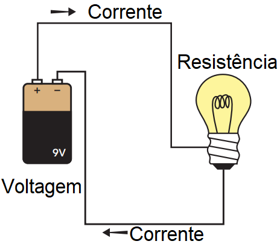
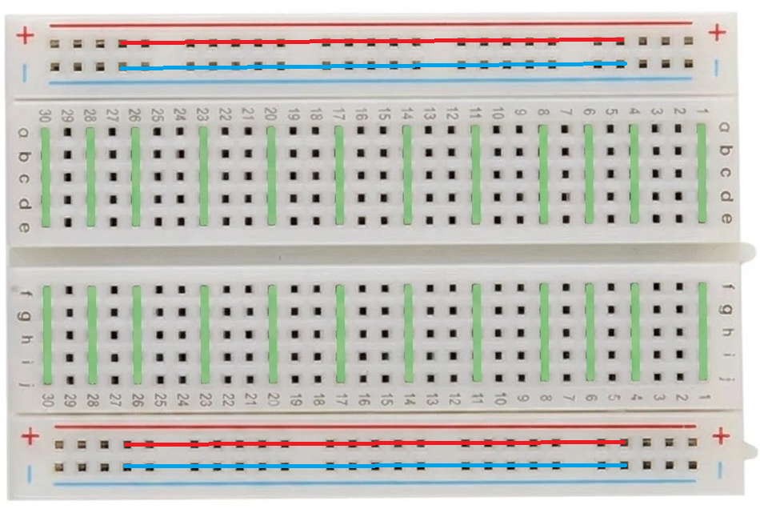

⚡ Elétrica Básica💧 Analogias Visuais🔄 Circuito BásicoPg. 1 de 2
Se você sabe ligar um carregador de smartphone na tomada, você já tem tudo que precisa! Não é preciso saber matemática — este capítulo vai traduzir a eletricidade em algo bem comum: água passando por um cano. Ao final deste material, você reconhecerá todas as peças do quebra-cabeças e estará pronto(a) para o primeiro desafio.
⚡ Os 3 Pilares da Eletricidade
🔋Tensão — Volts (V)
É a "força" que empurra os elétrons pelo fio.
💧Como a pressão da água num cano — quanto maior, mais força.
⚡Corrente — Amperes (A)
É o fluxo de elétrons que passa pelo circuito.
💧Como a quantidade de água que flui pelo cano por segundo.
🔩Resistência — Ohms (Ω)
É o obstáculo ao fluxo de elétrons.
💧Como um cano mais estreito que dificulta a passagem da água.
🛡️A Regra de Ouro — Por que existe o Resistor?
Esses três conceitos se relacionam: se a bateria tem muita pressão (Tensão) e o LED é frágil, o Resistor age como um freio — ele absorve o excesso de energia para que o LED não queime. Nos nossos kits, o resistor certo já está separado. Não precisa calcular nada!
💧Tipo a válvula redutora no chuveiro: a água chega com força, mas sem explodir o encanamento.
🔄 O Circuito Básico: como a energia flui
Em qualquer circuito, a energia percorre um caminho fechado: sai do polo positivo da fonte, passa pelos componentes e volta ao polo negativo.
🔋 Bateria (+)
→
🔩 Resistor
→
💡 LED
→
🔋 Bateria (−)
→
🔁 Recomeça

🔬
Capítulo 1 — Conhecendo as Peças
Micro:Bit · Formação de Multiplicadoras
🧩 Protoboard🔩 Resistor💡 LED📏 MultímetroPg. 2 de 2
📦 Separe antes de começar
Protoboard
LEDs (variados)
Resistores 220Ω
Resistores 10kΩ
Sensor LDR
Push button
Multímetro
Micro:bit + USB
Suporte pilha 3V
Cabos jumper
Cabos jacaré
🔬 O que é cada peça?
🧩Protoboard
Placa de ensaio com furos interligados por dentro. Permite montar circuitos sem solda, apenas espetando os componentes.
💡Bordas trilhas horizontais (+ e −) Miolo colunas verticais conectadas
🔩Resistor — O Freio
Limita a corrente no circuito. O valor em Ohms é lido pelas faixas coloridas. Não tem polaridade — funciona dos dois lados.
🛡️Faixa curta protege LED Faixa longa ajuda o sensor
💡LED — A Luz
Diodo que emite luz. Tem polaridade: a perna longa é o + (Anodo) e a perna curta é o − (Catodo). Invertido, não acende.
⚠️Se o LED não acender, tente inverter!
📏Multímetro — O Detetive
Confirma se a energia consegue passar por um fio. Nosso principal uso: o Teste de Continuidade (apito). Gire para . Toque no fio!
Apitou ✅ = passa. Silêncio ❌ = quebrado.
🚀 Desafio 1 — O Raio-X da Protoboard
01
🎯 Ação — Use o multímetro no modo (apito) para mapear como a energia viaja dentro da protoboard. Descubra o padrão!
✅ Aprende — Confiança para mexer nas peças e entender a lógica da protoboard antes de montar qualquer circuito.

🧠 Verificação Rápida — Verdadeiro (V) ou Falso (F)?
( )O LED tem polaridade: a perna longa vai no (+) e se ligado invertido ele não acende.
( )O Resistor tem lado certo (positivo e negativo) e queima se for ligado ao contrário.
( )No Multímetro, o apito de continuidade confirma que a energia consegue passar pelo caminho.